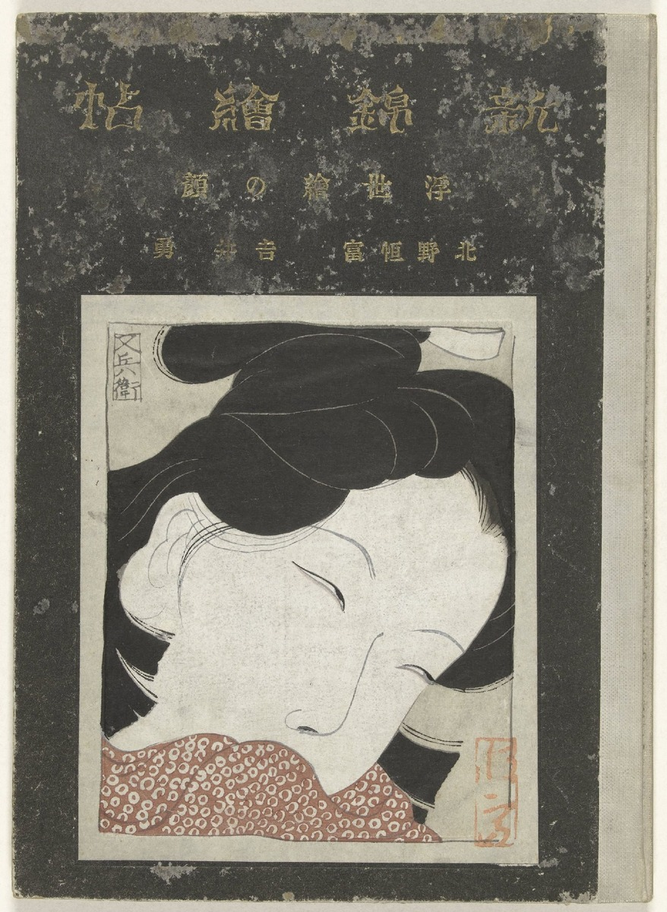

#01
track2_0259
默认保留 Guarded v1
Tier A

Base
calm
平静
Positive / Low
Scaled desc_v1
tired
疲惫
Negative / Low
Guarded v1
calm
平静
Positive / Low
你要做什么 / Human task
快速看图确认是否明显错；没有明显错就通过。
三步判断 / Evidence workflow
- 正负：画面主导感受是安宁、快乐、满足，还是痛苦、威胁、疲惫、冲突？
- 唤醒：画面是静止低强度，还是有危险、打斗、骚动、强烈动作？
- 二选一：先排除正负/唤醒不匹配的候选；如果同象限，再按下面候选定义选择。
本图候选标签边界
- calm / 平静: 正向低唤醒：安静、松弛、平和，没有明显欲望或庆祝。
- tired / 疲惫: 负向低唤醒：耗尽、困倦、无力；闭眼不等于 tired。
Gemini-agent second opinion
Gemini-agent contact sheet second opinion: 19/19 high-conf rollback rows favor Guarded/Base over Scaled desc_v1.
Prior Gemini 3.5: change_to_base; conf=5; suggested=calm / Positive / Low
The artwork depicts a serene, peaceful expression of a woman with closed eyes, which is described in the text as evoking inner peace and tranquility, making 'calm' a much more accurate label than 'tired'.
Caption / 文本
A serene and intimate close-up of a woman's face with closed eyes, rendered in a traditional Japanese woodblock print style that evokes a sense of quietude and inner peace.